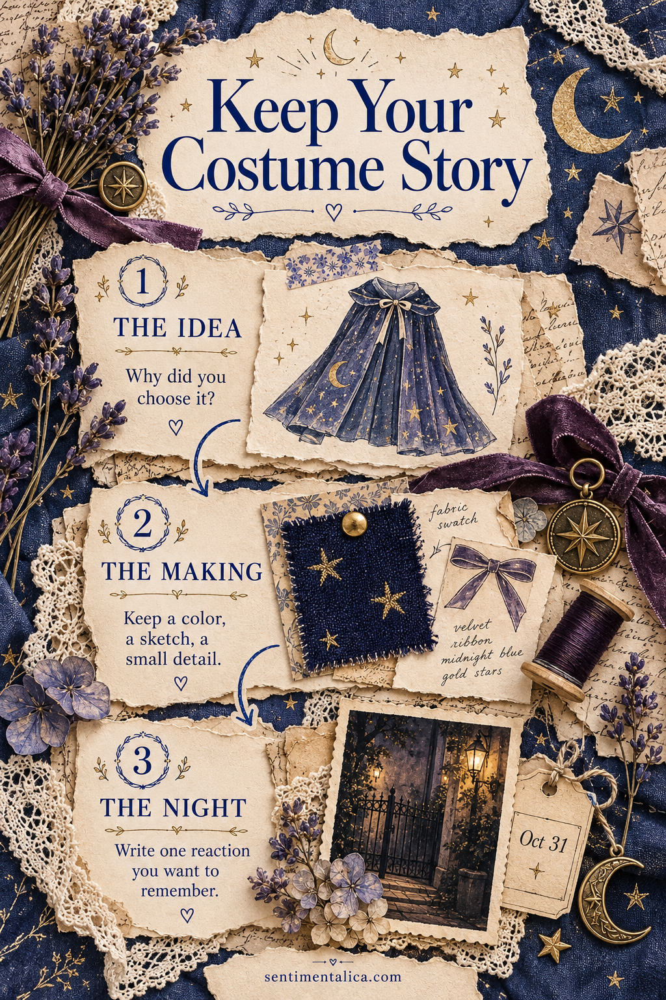
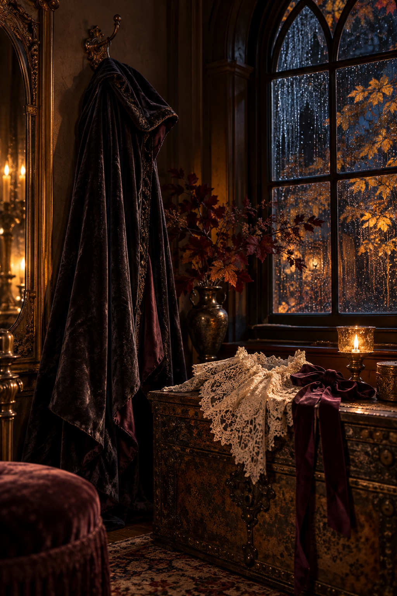

A Halloween costume photograph shows what you wore. It rarely shows the borrowed coat, the idea changed at the last minute, or the friend who understood the reference immediately. A costume memory page can keep those details beside the photograph. Divide one spread into the idea, the making, and the night, so you have a place for the story before the small scraps disappear.

Gather the Evidence Before Decorating
Set out one photograph or a blank rectangle for a photograph you will add later. Beside it, place a quick sketch, a clean fabric offcut, or a little note about the costume. You do not need all three. A remembered sentence can stand in for an object you no longer have.
On scrap paper, write the costume name, the year, and where you wore it. If you made the page before Halloween, leave the night section open. A memory page can begin with anticipation and finish afterward; there is no need to pretend the evening has already happened.
The best costume detail may be the one the photograph cannot explain.
Give the Idea a Small Corner
Reserve a narrow area at the upper left for the reason you chose this character or look. Write something more precise than ‘I liked it.’ Perhaps the book belonged to your grandmother, the film was a shared joke, or you wanted to use the velvet jacket already in your wardrobe.
Keep this section small enough that the page still has room for the event. A thumbnail sketch and two sentences are plenty. Put the costume name on a separate paper label so the reader understands the page before looking closely at the details.

Let the Making Leave a Trace
Place the sketch or material trace in the middle of the spread. Attach a flat offcut rather than a bulky costume component. If a piece is too thick, photograph it and use a small print instead. Test the closed journal with the loose items inside before gluing anything down.
Write one making note alongside it: ‘The collar took two evenings,’ ‘We changed the hat on Friday,’ or ‘The cape began as an old curtain.’ This is where the practical story belongs. A crooked seam or an abandoned idea can be more memorable than a polished list of materials.
Keep the Night in Someone’s Own Words
Give the largest area to the photograph and one reaction. If somebody said something you remember exactly, put those words in quotation marks. If you only remember the meaning, describe the reaction without making it into an exact quote. Include the date and a small place note.
You can use the same layout for a family costume without squeezing every person into one caption. Put names close to their photographs, then choose one shared moment for the page: the walk to a party, the doorstep laughter, or the pause while everyone found their shoes.
Finish with a Readable Story
Before adding decoration, read the three sections in order. You should be able to understand why the costume existed, how it came together, and what happened when it left the house. If one part is missing, fill it with a sentence rather than another ornamental layer.
Use a dark pen on a quiet scrap for the writing. Repeat one small color from the costume at two edges of the page, then leave the photograph clear. Close the journal gently and check that the material trace does not press into the opposite page. Add a date to any later note, so the first memory stays distinct. Your costume can be wonderfully elaborate; its memory page only needs to hold the details you would otherwise lose.
Find more gentle paper projects in the Sentimentalica journal.